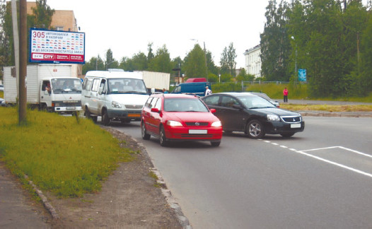
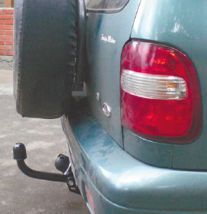
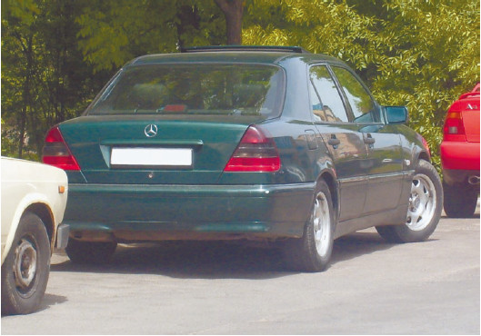
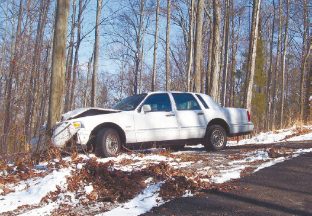
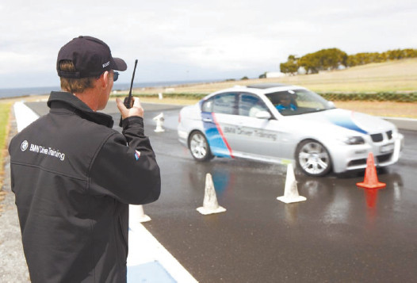
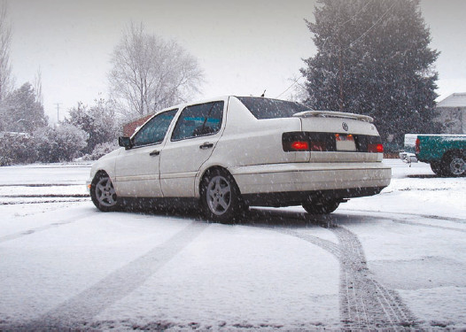
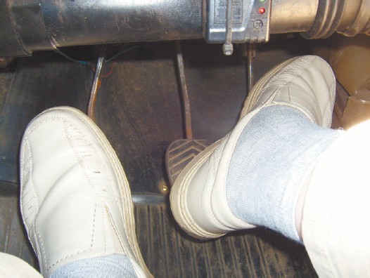

Водительские вопросы
На перекрестке я собирался повернуть налево. Перекресток регулируемый, на светофоре имеется дополнительная секция со стрелкой налево. Я стоял первым на поворот и ждал разрешающего сигнала светофора. Сзади меня ударил другой автомобиль, и мою машину выбросило на встречную полосу. В результате были повреждены еще два автомобиля. Меня признали виновным в аварии наравне с тем водителем, который врезался в мою машину. Почему?
Судя по всему, в ожидании поворота вы вывернули колеса влево, чтобы ускорить затем прохождение поворота (рис. 2.22). Если бы колеса были в прямом положении, то при ударе сзади вашу машину бросило бы вперед и ничего особо страшного не произошло бы.

Рис. 2.22. Верный путь к ДТП – «выползание» на перекресток с опережением, до включения разрешающего сигнала светофора
Чаще всего при таких ДТП, если скорость идущего сзади автомобиля не слишком высока, отделываются разбитым бампером либо слегка помятым задним номером, а если имеется фаркоп (рис. 2.23), то ударившему автомобилю придется совсем нехорошо, а стоящий отделается легким испугом.

Рис. 2.23. Автомобиль с фаркопом
Когда же колеса уже находятся в позиции «поворот», то автомобиль выбрасывает именно в том направлении, куда смотрят колеса. В данном случае – на встречную полосу, по которой ехали автомобили. Результатом явилась множественная авария.
При парковке также не рекомендуется оставлять колеса повернутыми (рис. 2.24). Это может привести к столкновению с впереди-стоящей машиной при выезде с парковки, а также к ДТП, если тот, кто паркуется сзади, подтолкнет и при этом автомобиль не будет стоять на «ручнике».

Рис. 2.24. При парковке не рекомендуется оставлять колеса повернутыми
Чтобы не переехать собаку, перебегавшую через дорогу, я свернул на обочину. Машину занесло, и она врезалась в дерево – лобовой удар, и отремонтировать невозможно. Скорость была относительно невысока (75 км/ч), угол поворота не очень большой, лето, дорога сухая. Что явилось причиной заноса? Почему я не смог справиться с управлением?Занос и снос колес автомобиля могут происходить не только зимой и на обледеневшей дороге (рис. 2.25). Причиной заноса задних колес автомобиля могут быть различное давление воздуха в шинах, износ протектора, слишком быстрое включение сцепления, резкие манипуляции с рулевым колесом, высокая скорость на неровной дороге (а обочина вполне могла быть неровной), неравномерное торможение колес (колеса могли находиться на участках дороги с разным покрытием, например песчаная обочина и асфальтобетонное покрытие дороги), разрыв шины, неравномерное распределение груза в багажнике на крыше автомобиля и в прицепе. Если произошел занос задних колес, то, скорее всего, вы не проверили колеса перед поездкой, слишком быстро включили сцепление или слишком резко дергали руль.

Рис. 2.25. Печальные последствия столкновения с деревом
Причиной сноса передних колес летом может быть низкий коэффициент сцепления с дорожным покрытием, что часто происходит на дорогах с песчаным, щебеночным, старым, выезженным асфальтобетонным покрытиями. В данном случае либо песчаная, либо щебеночная обочина могла явиться причиной сноса передних колес.
Пытаясь бороться с заносом или сносом, начинающие водители часто делают одну и ту же ошибку – поворачивают рулевое колесо в сторону, противоположную заносу. В результате ситуация усугубляется. Рулевое колесо следует поворачивать в сторону заноса на небольшой угол.
Еще одна ошибка – использование рабочей тормозной системы во время заноса. Возможно, когда автомобиль начало заносить, вы нажали на педаль тормоза. В результате колеса заблокировались, автомобиль потерял управляемость и по песчаной обочине заскользил к дереву.
Следует также различать занос передней и задней оси – способы борьбы с ними различны. К примеру, при заносе передних колес может помочь небольшое уменьшение подачи топлива (не торможение!) – таким образом восстанавливается сцепление колес с дорожным покрытием. А при заносе задних колес, напротив, рекомендуется увеличить подачу топлива небольшой подгазовкой.
Тренироваться в выходе из заноса и сноса на дороге в экстремальной ситуации уже поздновато. Это нужно делать раньше, на площадке, осваивая приемы контр-аварийного вождения, желательно под руководством инструктора (рис. 2.26).

Рис. 2.26. Тренировки на площадке – залог успешного выполнения маневра на дороге
Зимой на дороге автомобиль начал вращаться без видимой причины (небольшая скорость, хорошие зимние покрышки). Мне с трудом удалось остановить его у обочины. Что случилось?Чаще всего неуправляемое вращение автомобиля на зимних дорогах связано с попыткой использования рабочей тормозной системы на скользком дорожном покрытии. У многих начинающих водителей (особенно у тех, кто учился вождению на курсах весной и летом) нажатие на педаль тормоза в экстремальной ситуации (или даже просто при приближении к светофору или пешеходному переходу) становится рефлекторным. Однако в некоторых случаях (к примеру, на зимних дорогах) подобный автоматизм может привести к аварии вместо того, чтобы ее предотвратить. Поэтому следует тренироваться в зимнем вождении – оно отличается от летнего и имеет свои особенности, которые следует знать до того, как выезжать зимой на дорогу (рис. 2.27).

Рис. 2.27. Зимой автомобиль ведет себя на дороге не так, как летом
При повороте мне показалось, что скорость слишком высока, и я начал притормаживать. Автомобиль выбросило в кювет. Что было сделано неправильно? Ведь торможение было плавным и осторожным, никаких резких ударов по педали тормоза не было!Снижать скорость на дуге поворота не рекомендуется, так как это может привести к непредсказуемым последствиям: неуправляемому или ритмическому заносу, выбросу автомобиля в кювет или на встречную полосу и т. д. Однако в некоторых ситуациях (например, в случае превышения критической скорости прохождения поворота) приходится идти на риск. Но при этом нужно уметь пользоваться нестандартными приемами торможения, например с одновременной подгазовкой (чаще всего осуществляется практически одновременное воздействие на педали тормоза и газа правой ногой: носком на педаль тормоза, а пяткой на педаль газа или наоборот) (рис. 2.28).

Рис. 2.28. Одновременная работа педалями тормоза и газа правой ногой
Полгода назад я приобрел автомобиль в хорошем состоянии без каких-либо проблем. Теперь, когда машина была отогнана на СТО для подготовки к зиме, мне сказали, что требуется серьезный кузовной ремонт – лопнул лонжерон. Но как это могло случиться, если за полгода эксплуатации не было ни одного ДТП, а когда я покупал автомобиль, все было в порядке? Не обманывают ли меня мастера на СТО?Лонжерон мог лопнуть и без всякого ДТП, если автомобиль сильно перегружали (к примеру, если на нем пытались перевезти сразу весь дачный урожай). Но если есть сомнения в честности мастеров СТО, то всегда можно обратиться на другую СТО, к другим специалистам, которые подтвердят либо «диагноз», либо негативное мнение о мастерах того СТО, где сообщили о поломке.
Недавно мне заменили на СТО кривые тормозные диски на новые. Сам проверил – ровные, нормальные диски. Но теперь они тоже искривились, хотя прошло совсем немного времени. Может, это в автомобиле какой-то брак, поломка?Если тормозные диски изначально не были бракованными, то причина может быть в стиле вождения. Если вы любите резкие разгоны (от светофора так, чтоб двигатель ревел, а покрышки взвизгивали) и такие же резкие торможения, то, конечно, тормозные диски разогреваются. И если после подобных торможений пролететь по луже или заехать на автомойку, то диски начнут коробиться – горячий металл, политый холодной водой, деформируется. Ну а если вы еще приобретаете «беспородные» тормозные диски, то они деформируются быстрее, чем фирменные изделия. И тем не менее это брак не тормозных дисков, даже «беспородных», а брак водителя.
Я ехал прямо, собирался поворачивать направо. Включил правый указатель поворота заранее. Неожиданно из проезда от магазина выехал автомобиль и помял мне крыло. Водитель того автомобиля обвинил меня в аварии. Приехавшие сотрудники ДПС признали его виновным, так как он выезжал с второстепенной дороги на главную, но и мне выписали штраф! Почему?Судя по описанию произошедшего, вы включили правый указатель поворота намного раньше, чем требовалось, и в результате ввели в заблуждение водителя другого автомобиля. Именно поэтому он и обвинил вас в ДТП – в соответствии с подаваемыми вами сигналами вы должны были поворачивать в тот самый проезд, откуда он выехал, что совершенно не мешало ему совершить правый поворот и выехать из проезда на дорогу. Конечно, сигналы о предстоящих маневрах следует подавать заранее, до начала совершения маневра, как и положено по ПДД, но все же не стоит ехать целый квартал с включенным поворотником, так как впереди вас ожидает перекресток.